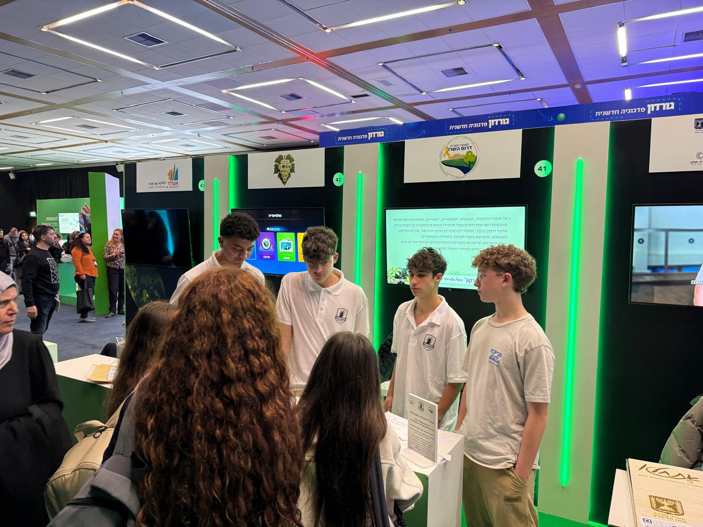
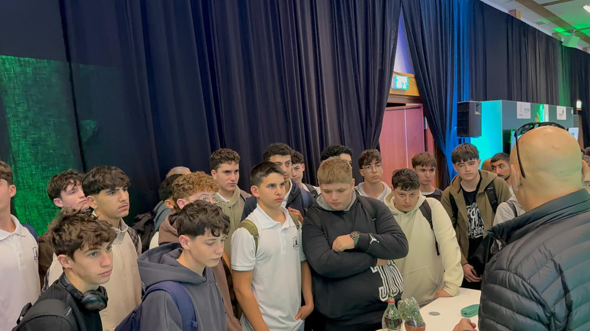
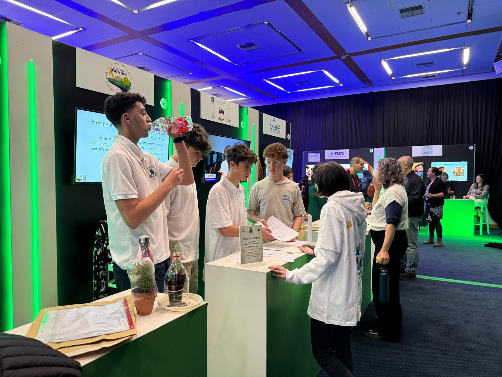
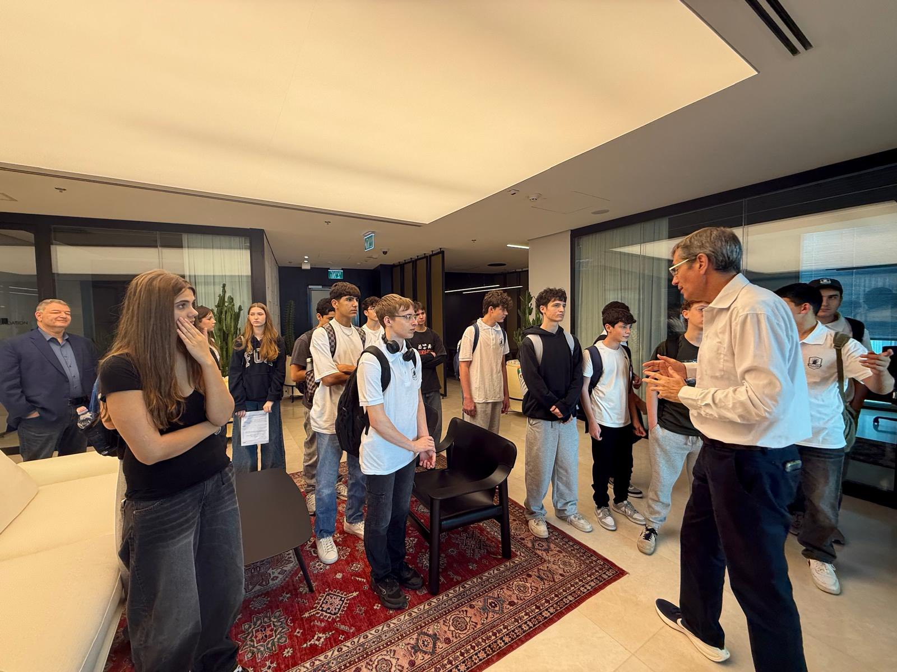
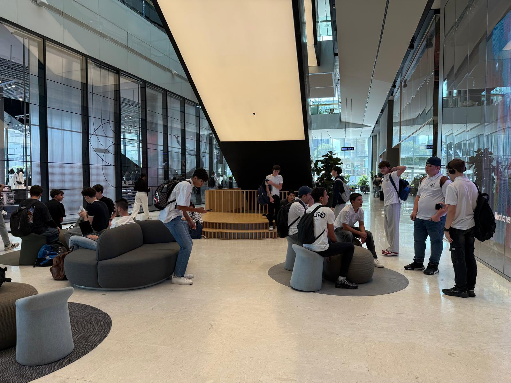
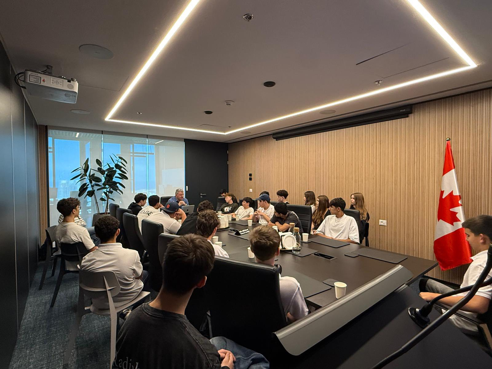

מגמת פילוסופיה של המדע
בית חינוך ירקון | נווה ירק
"הדבר היחיד שאני יודע הוא שאיני יודע דבר"- סוקרטס
אתיקה, חשיבה ביקורתית ופילוסופיה
לראשונה בישראל הוקמה מגמה מיוחדת במינה ללימודי פילוסופיה של המדע.
פילוסופיה של המדע משתלבת מצוין עם חיינו, ועם המגמות המדעיות האחרות, ומעמיקה ומשלימה את ההתמקצעות בחשיבה האישית, המדעית.
פיתוח החשיבה העצמאית שלנו מאפשר לנו להכיר ולהבין עצמנו היטב, לשאול שאלות, לחשוב באופן ביקורתי.
לחשוב מחוץ לקופסא, להתנסות, להצטיין – יכולות ותכונות חשובות ביותר מול עולמנו העתידי.
הבנת המחשוב והבינה המלאכותית - כלים חדשים להבנה מעמיקה של המדע בימינו.
יש אין ספור סיבות ללמוד פילוסופיה, אבל יותר מכל – זה פשוט מעניין לשאול שאלות!
נפגוש ונשוחח עם מדענים ופילוסופים מובילים בתחומם, נבקר ונסייר במכוני מחקר.
נצא לסיורים בארץ, ובחו"ל (רשות) לפילוסופיה של המדע ומכוני מחקר מדעיים.
מפגשים עם מדענים, פילוסופים ומכוני מחקר






נחקור את תורות האתיקה (המוסר), ותורות האפיסטמולוגיה והמטפיזיקה דרך דמויות שיהפכו לחברינו הקרובים:
נכיר הכיוונים העיקריים במחשבה האתית הקלאסית והמודרנית, הספק והממשות, מקורות הידיעה וביסוסה, ונפתח רגישות לטיעונים בחיינו.
נעסוק בפילוסופיה של המדע דרך לא מעט פילוסופים ומדענים:
נעמיק החקר בתורות המוסר וההכרה. במקביל נבצע את עבודת החקר האישית המשלבת בין הפילוסופיה למגמה המדעית של כל אחת ואחד מכם.
מי יודע מה הוא רוצה לעשות כשיגדל?
פיתוח החשיבה העצמאית שלנו מאפשר לנו להכיר ולהבין עצמנו היטב,
ולהצטיין בכל תחום שנבחר בעתיד.
הצטרפו למגמה הייחודית בישראל לפילוסופיה של המדע
"החיים ללא בחינה אינם שווים לחיותם"- סוקרטס